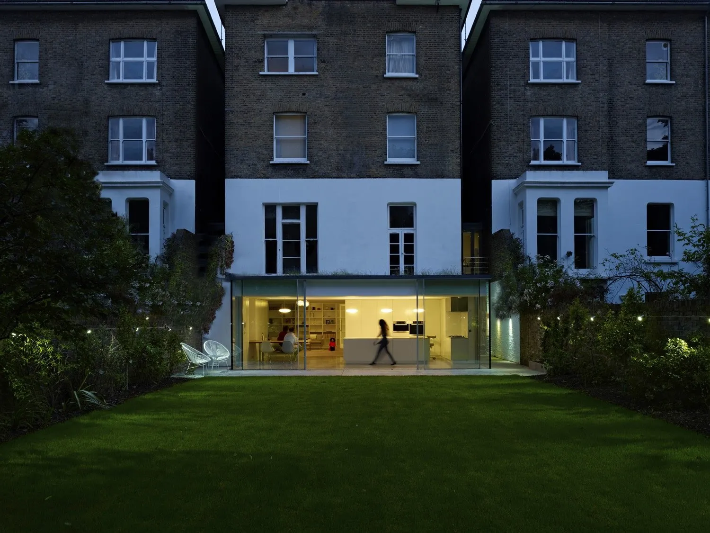
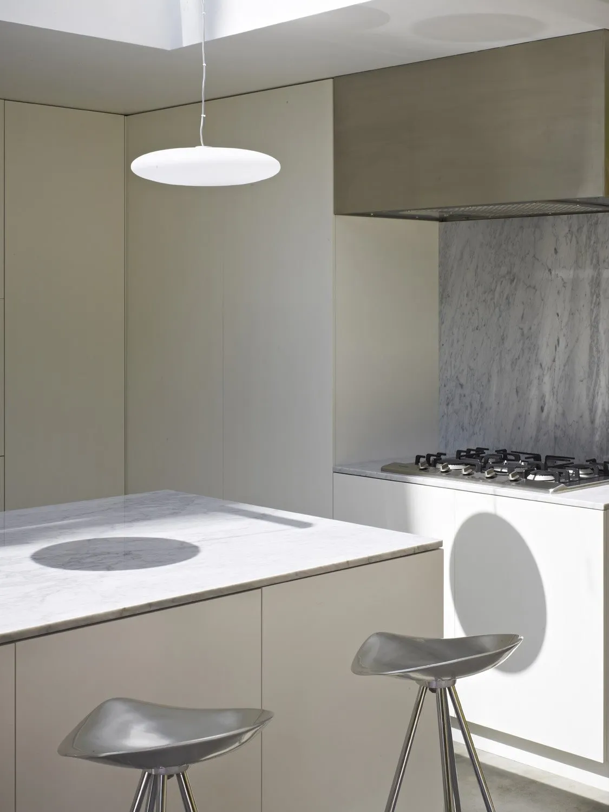
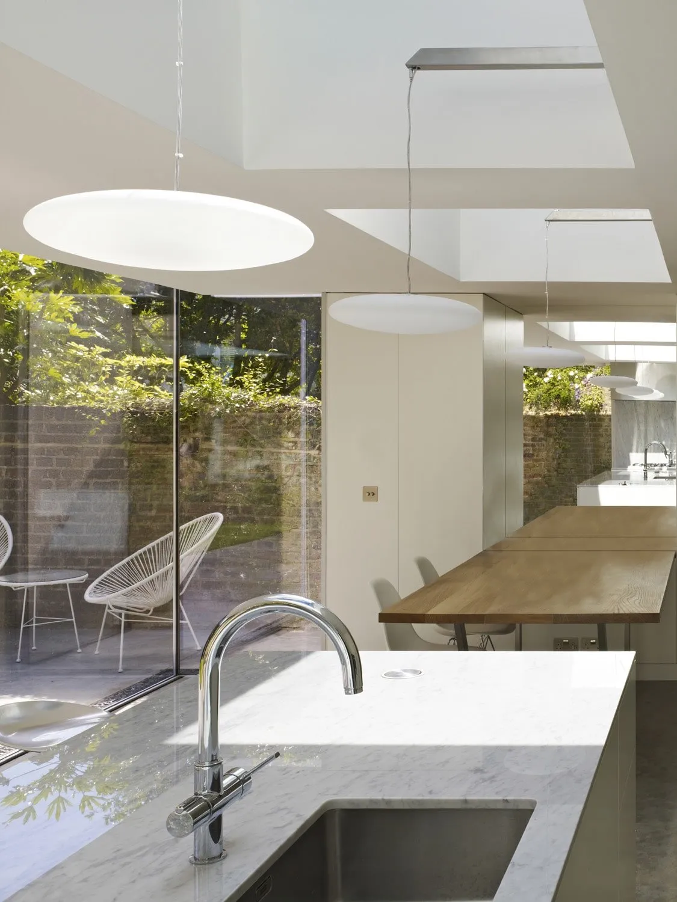
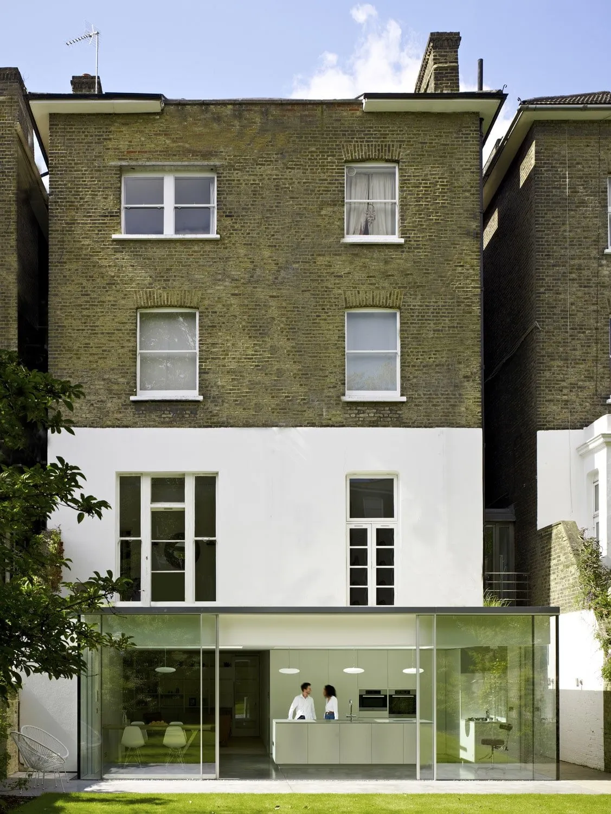
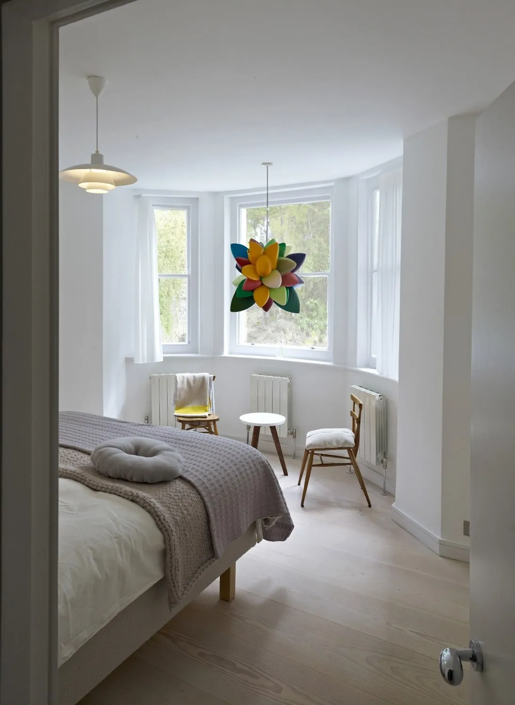
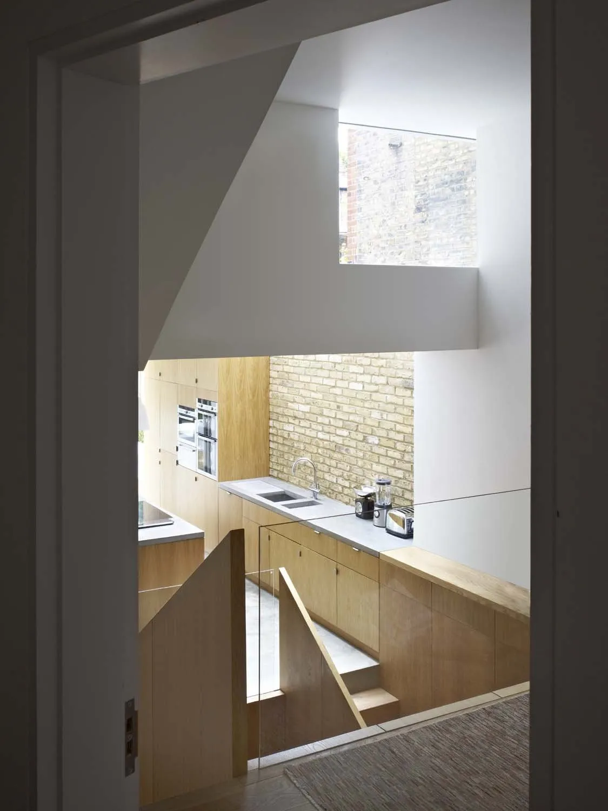

Kitchen Garden
A three-bedroom Maida Vale apartment opened to its garden through ultra-slim glazing and a single linear rooflight aligned with the kitchen island below.
Reading the garden from the kitchen.
The clients had a three-bedroom Maida Vale apartment with a garden they barely used. The brief was to make the boundary between the two as soft as possible — so the kitchen would read as part of the garden rather than a room that looked out onto it.
The plan keeps the move quiet: ultra-slim profile glazing wraps the kitchen and dining area so the frame almost disappears, and a single linear rooflight runs along the ceiling directly above the kitchen island. The island, the dining table and the cooker hood line up on the same axis, so the threshold reads as a single line rather than a wall.
Bespoke mirrors set along the same line reflect the garden back into the room and stop the kitchen feeling enclosed at night. After dark, bespoke pendants hung above the island take over from the rooflight and hold the room close.



"The rooflight runs the line of the island. After dark, the pendants take over."
Studio

What it’s made of.

- Warm-taupe matt-lacquered MDF Kitchen joinery
- Carrara marble Island worktop and back-splash
- Brushed stainless steel Extractor canopy finish
- Pale natural European oak Long dining counter
- Pale polished concrete floor Open-plan flooring
- Frameless clear float glass Ultra-slim glazing
- Brushed-silver aluminium frame Linear rooflight frame
- Yellow London stock brick Existing garden boundary wall
Considering a project of your own?
Get in touch →
